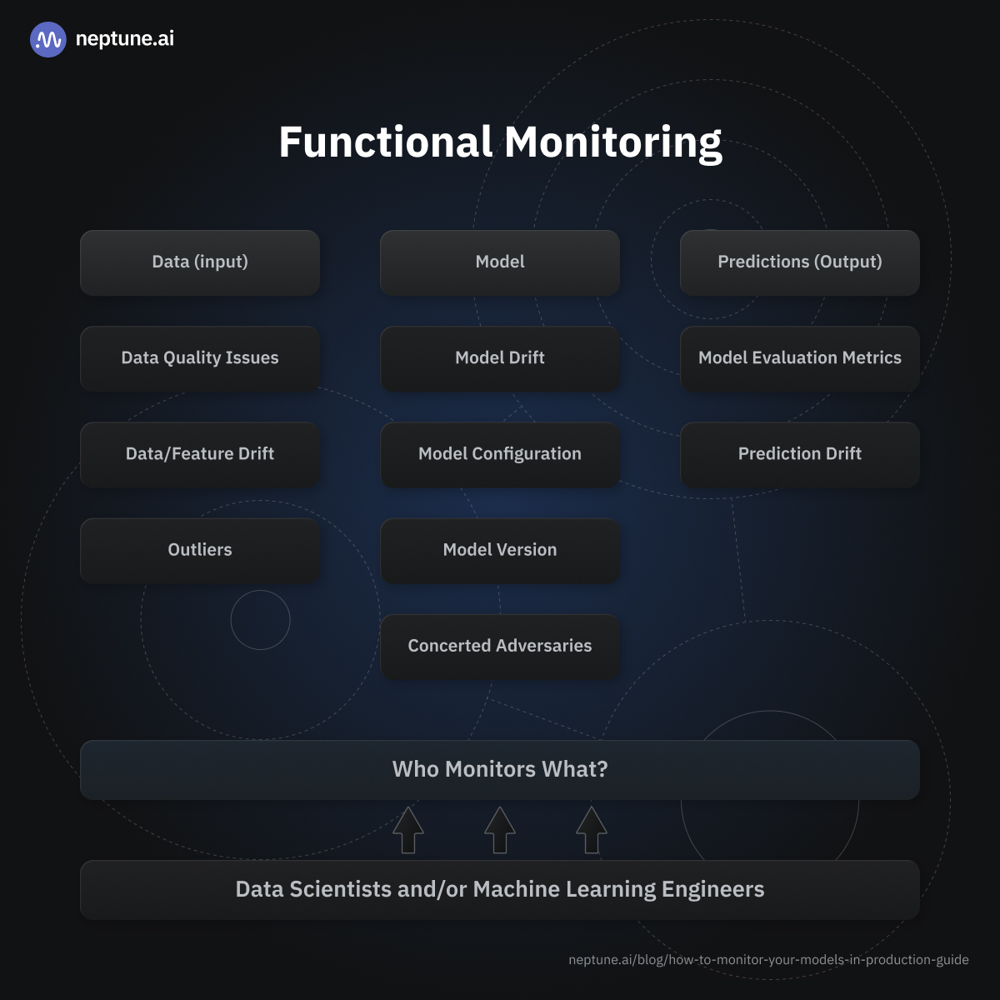
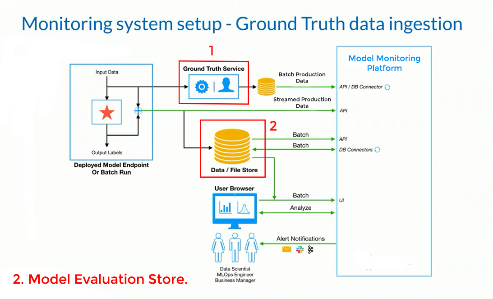
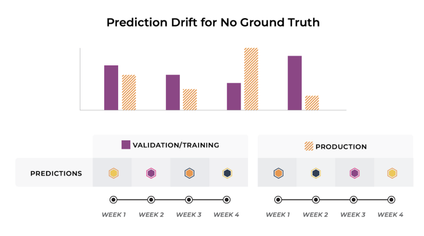

6.7. Functional level monitoring#

6.7.1. Data input#
6.7.1.1. Data quality issues#
Tính toàn vẹn của Data input bị thay đổi. Để validate tính toàn vẹn của data trước khi đưa vào model, cần kiểm tra một số metrics liên quan đến data properties/ datatypes
Nguyên nhân:
Break in data preprocesing pipelines
Change source of data
Data bị loss in source
Detection techniques:
Testing input data for duplicates,
Testing input data for missing values,
Catching syntax errors,
Catching data type and format errors,
Kiểm tra source dữ liệu của feature bị detect có issue ,
Possible solutions after detecting data quality issues:
Tạo alert khi data source thay đổi
6.7.1.2. Data/feature drift#
Sự thay đổi distribution/histogram của dữ liệu training và production sét trên level features/variables
Nguyên nhân:
Data quality issue
Change in data properies in real world
Detection techniques:
Testing statistic estimator of input features: mean, STD, median, variance, range,…
For continuous features: use divergence and distance test the distribution: KL divergence, KS statistic, Population Stability Index (PSI), Hellinger distance,…
For categorical features: use chi-square test, entropy, number of distance, mode,…
Boxsplot
(if there are a lot of features, can be use dimmensionality reducetion techniques (such as PCA,…) before test)
Possible solutions after detecting data drift:
Tạo alert và gửi notif khi phát hiện data drift vượt threshold
Retrain set of new data collection in model periodically
6.7.1.2.1. PSI#
Rules:
PSI< 0.1 - No change. You can continue using existing model.PSI>=0.1 but less than 0.2 - Slight change is required.PSI>=0.2 - Significant change is required. Ideally, you should not use this model any more.
import numpy as np
def _psi(expected: np.ndarray, actual: np.ndarray, bucket_type: str = "bins", n_bins: int = 10) -> float:
"""Calculate PSI metric for two arrays.
Parameters
----------
expected : list-like
Array of expected values
actual : list-like
Array of actual values
bucket_type : str
Binning strategy. Accepts two options: 'bins' and 'quantiles'. Defaults to 'bins'.
'bins': input arrays are split into bins with equal
and fixed steps based on 'expected' array
'quantiles': input arrays are binned according to 'expected' array
with given number of n_bins
n_bins : int
Number of buckets for binning. Defaults to 10.
Returns
-------
A single float number
"""
breakpoints = np.arange(0, n_bins + 1) / (n_bins) * 100
if bucket_type == "bins":
breakpoints = np.histogram(expected, n_bins)[1]
elif bucket_type == "quantiles":
breakpoints = np.percentile(expected, breakpoints)
# Calculate frequencies
expected_percents = np.histogram(expected, breakpoints)[0] / len(expected)
actual_percents = np.histogram(actual, breakpoints)[0] / len(actual)
# Clip frequencies to avoid zero division
expected_percents = np.clip(expected_percents, a_min=0.0001, a_max=None)
actual_percents = np.clip(actual_percents, a_min=0.0001, a_max=None)
# Calculate PSI
psi_value = (expected_percents - actual_percents) * np.log(expected_percents / actual_percents)
psi_value = sum(psi_value)
return psi_value
def calculate_psi(
expected: np.ndarray, actual: np.ndarray, bucket_type: str = "bins", n_bins: int = 10, axis: int = 0
) -> np.ndarray:
"""Apply PSI calculation to 2 1-d or 2-d arrays.
Parameters
----------
expected : list-like
Array of expected values
actual : list-like
Array of actual values
bucket_type : str
Binning strategy. Accepts two options: 'bins' and 'quantiles'. Defaults to 'bins'.
'bins' - input arrays are split into bins with equal
and fixed steps based on ’expected' array
'quantiles' - input arrays are binned according to ’expected’ array
with given number of n_bins
n_bins : int
Number of buckets for binning. Defaults to 10.
axis : int
Returns
-------
np.ndarray
Args:
axis:
axis:
"""
if len(expected.shape) == 1:
psi_values = np.empty(len(expected.shape))
else:
psi_values = np.empty(expected.shape[axis])
for i in range(0, len(psi_values)):
if len(psi_values) == 1:
psi_values = _psi(expected, actual, bucket_type, n_bins)
elif axis == 0:
psi_values[i] = _psi(expected[:, i], actual[:, i], bucket_type, n_bins)
elif axis == 1:
psi_values[i] = _psi(expected[i, :], actual[i, :], bucket_type, n_bins)
return np.array(psi_values)
calculate_psi(feature_train_proba, feature_produ_proba, bucket_type="bins", n_bins=10, axis=0)
6.7.1.3. Outliers#
Sự xuất hiện với tần xuất nhiều các outlies có thể ảnh hưởng tới hiệu suất của mô hình, hoặc dấu hiệu chỉ ra 1 pattern mới mà dữ liệu train trước đó chưa được học.
Detection techniques:
Determine how far/how often from outlier to training dataset
Possible solutions after detecting outliers:
Tạo subset mới chứa outlier và retrain new model, đánh giá sự khác biệt giữa new model và primary model.
6.7.2. Model#
6.7.2.1. Model drift#
Hiện tượng thay đổi relationship giữa biến Y và các biến X (supervised) hoặc giữa các biến X (unsupervised) với nhau, thậm trí không còn mối tương quan, dẫn tới kết quả model giảm tính chính xác overtime so với benchmark/KPIs
Cause:
The real-world data changes naturally or sudden as stress events
Model drift detection
Catching the change of correlation/auc/… between X and Y or between Xs
Detect by predictive performance is reduce overtime by setting a predictive metrics threshold
Detect by label drift (change the distribution)
Possible solutions after detecting model/concept drift
If your business objectives and environment change frequently, you may want to consider automating your system to schedule and execute retraining at predefined intervals compared to more stable businesses
If retraining your models doesn’t improve performance, you may want to consider remodeling or redeveloping models from scratch.
If you’re working on larger scale projects with a good budget and little trade-off between cost and performance (in terms of how well your model catches up with a very dynamic business climate), you may want to consider online learning algorithms for your project.
6.7.2.2. Model configuration and artifacts, version#
The model configuration file and artifacts contain all the components that were used to build that model, including:
Training dataset location and version,
Test dataset location and version,
Model version
Hyperparameters used,
Default feature values,
Dependencies and their versions; you want to monitor changes in dependency versions to easily find them for root cause analysis when model failure is caused by dependency changes,
Environment variables,
Model type (classification vs regression),
Model author,
Target variable name,
Features to select from the data,
Code and data for testing scenarios,
Code for the model and its preprocessing.
Track the configurations for relevance—especially the hyperparameter values used by the model during retraining for any abnormality.
6.7.2.3. Protect model by attack#
Monitor your system for adversarial attacks by using the same steps you use to flag inputs with outlier events because adversarial threats don’t follow a pattern, they’re atypical events.
6.7.3. Predictions (Output)#
Monitoring model output in production is not just the best indicator of model performance, but it also tells us if business KPIs are being met. In terms of model predictions, the most important thing to monitor is model performance in line with business metrics.
6.7.3.1. Model evaluation metrics#
(Scoring models when ground truth is available)
Using metrics to evaluate model performance is a big part of monitoring your model in production. Different metrics can be used here, such as classification, regression, clustering, reinforcement learning, and so on.
We typically evaluate the model using predefined model scoring metrics (accuracy, AUC, precision, etc) when you have a ground truth/label to compare your model with.

At 1, a part of the production data (input data) is channeled to the ground truth service which typically involves real-time ground truth generated by your system (for example, logging if a user clicked on an ad when the model predicted they would), a human label annotator, or other data labeling vendors for more complicated tasks (such as confirming if a customer repaid a loan at the stipulated time, or confirming if a transaction was fraudulent or legitimate after contacting a customer).
The event id that tracks prediction and model details is tagged with that ground truth event and logged to a data store. The data is then ingested into the monitoring platform, which computes the model performance metric given the model’s prediction and the actual label.
As you probably already know, metrics for a classification model include:
Accuracy
Confusion Matrix,
ROC-AUC Score,
Precision and Recall Scores,
F1-Score.
Metrics for a regression model include:
Root Mean Square Error (RMSE),
R-Squared and Adjusted R-Square Metrics,
Mean Absolute Error (MAE),
Mean Absolute Percentage Error (MAPE).
Calculating the model metrics above is only possible when you have the ground truth available.
6.7.3.2. Prediction Drift#
(Scoring models when ground truth is NOT available)

Metrics:
Hellinger Distance (HDDDM)
Kullback-Leibler Divergence: đo sự khác biệt giữa 2 phân phối rời rạc
Population Stability Index (PSI): đo sự khác biệt giữa 2 phân phối liên tục
# PSI
import numpy as np
def _psi(expected: np.ndarray, actual: np.ndarray, bucket_type: str = "bins", n_bins: int = 10) -> float:
"""Calculate PSI metric for two arrays.
Parameters
----------
expected : list-like
Array of expected values
actual : list-like
Array of actual values
bucket_type : str
Binning strategy. Accepts two options: 'bins' and 'quantiles'. Defaults to 'bins'.
'bins': input arrays are split into bins with equal
and fixed steps based on 'expected' array
'quantiles': input arrays are binned according to 'expected' array
with given number of n_bins
n_bins : int
Number of buckets for binning. Defaults to 10.
Returns
-------
A single float number
"""
breakpoints = np.arange(0, n_bins + 1) / (n_bins) * 100
if bucket_type == "bins":
breakpoints = np.histogram(expected, n_bins)[1]
elif bucket_type == "quantiles":
breakpoints = np.percentile(expected, breakpoints)
# Calculate frequencies
expected_percents = np.histogram(expected, breakpoints)[0] / len(expected)
actual_percents = np.histogram(actual, breakpoints)[0] / len(actual)
# Clip frequencies to avoid zero division
expected_percents = np.clip(expected_percents, a_min=0.0001, a_max=None)
actual_percents = np.clip(actual_percents, a_min=0.0001, a_max=None)
# Calculate PSI
psi_value = (expected_percents - actual_percents) * np.log(expected_percents / actual_percents)
psi_value = sum(psi_value)
return psi_value
def calculate_psi(
expected: np.ndarray, actual: np.ndarray, bucket_type: str = "bins", n_bins: int = 10, axis: int = 0
) -> np.ndarray:
"""Apply PSI calculation to 2 1-d or 2-d arrays.
Parameters
----------
expected : list-like
Array of expected values
actual : list-like
Array of actual values
bucket_type : str
Binning strategy. Accepts two options: 'bins' and 'quantiles'. Defaults to 'bins'.
'bins' - input arrays are split into bins with equal
and fixed steps based on ’expected' array
'quantiles' - input arrays are binned according to ’expected’ array
with given number of n_bins
n_bins : int
Number of buckets for binning. Defaults to 10.
axis : int
Returns
-------
np.ndarray
Args:
axis:
axis:
"""
if len(expected.shape) == 1:
psi_values = np.empty(len(expected.shape))
else:
psi_values = np.empty(expected.shape[axis])
for i in range(0, len(psi_values)):
if len(psi_values) == 1:
psi_values = _psi(expected, actual, bucket_type, n_bins)
elif axis == 0:
psi_values[i] = _psi(expected[:, i], actual[:, i], bucket_type, n_bins)
elif axis == 1:
psi_values[i] = _psi(expected[i, :], actual[i, :], bucket_type, n_bins)
return np.array(psi_values)
calculate_psi(y_train_proba, y_produ_proba, bucket_type="bins", n_bins=10, axis=0)
# Kullback
from scipy.special import rel_entr
P = [.05, .1, .2, .05, .15, .25, .08, .12]
Q = [.3, .1, .2, .1, .1, .02, .08, .1]
#calculate (P || Q)
sum(rel_entr(P, Q))
0.589885181619163